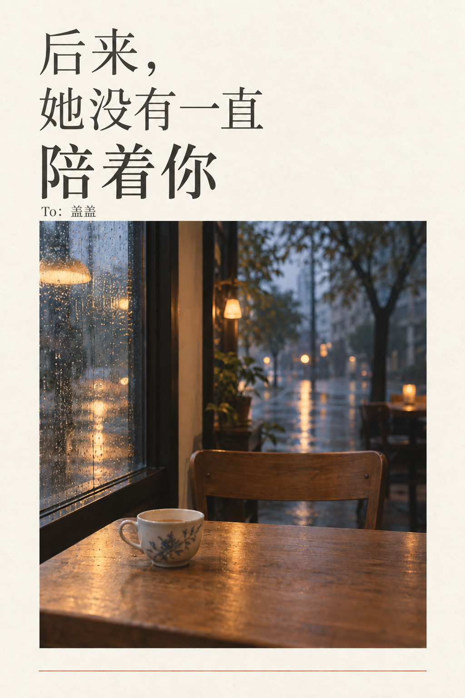

To:
盖盖
封面
/
读完整封信
给盖盖的一封信
后来，她没有
一直陪着你
To：盖盖
轻轻打开
↗
后来，她没有一直陪着你
今天读到这里
第
节
一
慢慢读，不着急。
←
Ⅱ
暂停一下
→
节奏
慢一些
适中
快一些
留住这一句
也可以长按信里的句子
0%
To：盖盖
合上 ×
后来，她没有一直陪着你
×

留住一句话
收好 ×
正在生成…
保存小卡片 ↓
手机也可以长按卡片保存
逐句阅读需要开启 JavaScript，也可以
直接阅读全文
。